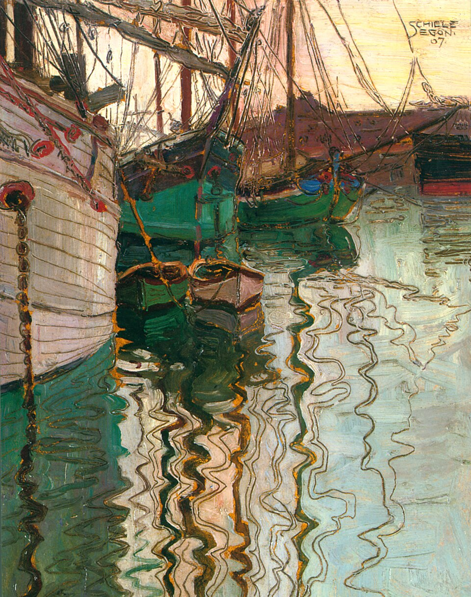

Maison d’édition associative créée en 2021, Triestiana a pour objet de promouvoir la poésie de Trieste et de ses environs, depuis les anciens comtés de Gorizia et Gradisca, jusqu’au littoral aujourd’hui slovène et croate de l’antique Histria.
Ce territoire de frontière, empreint des cultures de la Mitteleuropa des Habsbourg et marqué par les tragédies du XXe siècle, est un merveilleux creuset de formes, de genres et de langues, où se mêlent l’italien, l’allemand et le slovène, mais aussi les dialectes de Trieste, Grado ou Rovigno, magnifiés par des poètes peu connus des lecteurs francophones et souvent non traduits.
En co-édition avec les Éditions de l’éclat, nous donnons à entendre ces voix singulières, rares, témoignant d'un vif sentiment de l'existence.
